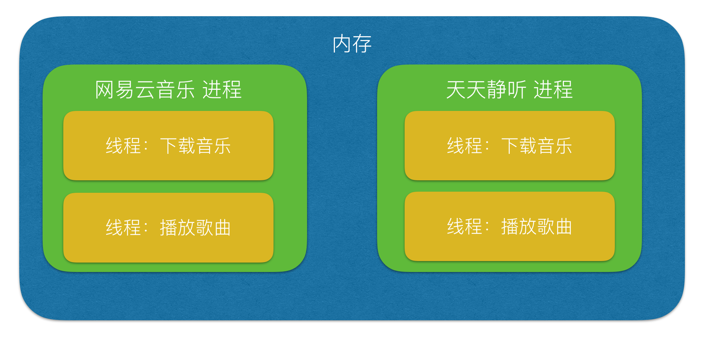

<html><head><meta charset='utf-8'><meta name='viewport' content='width=device-width, initial-scale=1'>
<meta name='applicable-device' content='pc'><meta name='keywords' content='电脑,电脑讲解,电脑技术,编程,电脑故障维修面试必问题目“进程、线程对比”，包你会' />
<script src='../../highlight/highlight.pack.js'></script>
<link rel='stylesheet' type='text/css' href='../../highlight/styles/monokai.css'/>

<link rel='stylesheet' href='../../fenxiang/dist/css/share.min.css'>
<script src='../../fenxiang/src/js/social-share.js'></script>
<script src='../../fenxiang/src/js/qrcode.js'></script>

</head><body><script>hljs.initHighlightingOnLoad();</script><script>
var system ={};  
var p = navigator.platform;       
system.win = p.indexOf('Win') == 0;  
system.mac = p.indexOf('Mac') == 0;  
system.x11 = (p == 'X11') || (p.indexOf('Linux') == 0);     
if(system.win||system.mac||system.xll){
document.write("<link href='../css/3.css' rel='stylesheet' type='text/css'>");}else{ document.write("<link href='../css/3wap.css' rel='stylesheet' type='text/css'>");}</script><script src='../../js/3.js'></script><div class='div2'><div class='heading_nav'><ul><div><li><a href='../../index.html'>首页</a></li>
</div><div onclick='hidden1()' >分享</div>
</ul></div></div>
<div id='heading_nav2'> 
<li class='row' >
<div class='social-share' data-mode='prepend'><a href='javascript:' class='social-share-icon icon-heart'></a></div></li></div><script charset='utf-8' src='../../3/js/hengfu.js'></script><script charset='utf-8' src='../../3/js/hengfu2.js'></script><hr><div class='div1'><div class='biaoti'><center>面试必问题目“进程、线程对比”，包你会</center></div><div class='banquan'>原文出处:本文由博客园博主dong4716138提供。<br/>
原文连接:https://www.cnblogs.com/dong4716138/p/12081635.html</div><br>
    <h2>简要说明</h2>
<p id="进程、线程对比">在C语言、C++等方向面试时，经常会被问道 进程、线程等问题，当然了10年前我刚开始找工作那会，也是各种煎熬&ldquo;我又不写操作系统，为什么还要学这么底层的知识&rdquo;，真想不通面试官是不是sha。。。</p>
<p>转眼间，我现在成了面试官，你说可笑不。。。。世事变化无常啊。。。。</p>
<p>&nbsp;</p>
<p>为了让各位小伙伴把这块理解了，所以趁一个空闲时机把它们的对比简单整理了下</p>
<p>我用了通俗易懂的方式来进行描述，希望各位小伙伴能够看完哦 😃</p>
<p>&nbsp;</p>
<p>抖擞抖擞精神。。。开始吧。。。</p>
<p>&nbsp;</p>
<h2 id="1-通俗理解进程、线程">1. 通俗理解进程、线程</h2>
<ul>
<li>进程，能够完成多任务，比如 在一台电脑上能够同时运行多个QQ</li>
<li>线程，能够完成多任务，比如 一个QQ中的多个聊天窗口</li>
</ul>
<p><a href="./images/面试必问题目“进程、线程对比”，包你会0.png" data-lightbox="f4e02f73-fb18-46a0-b60b-e94bf00a3871" data-title=""></a></p>
<h3 id="定义的不同">1.1 定义的不同</h3>
<ul>
<li>
<p><span class="pg-emphasize pg-emphasize-yellow">进程是系统进行资源分配和调度的一个独立单位.</span></p>
</li>
<li>
<p>线程是进程的一个实体,<span class="pg-emphasize pg-emphasize-yellow">是CPU调度和分派的基本单位,它是比进程更小的能独立运行的基本单位.线程自己基本上不拥有系统资源,只拥有一点在运行中必不可少的资源(如程序计数器,一组寄存器和栈),但是它可与同属一个进程的其他的线程共享进程所拥有的全部资源.</span></p>
</li>
</ul>
<h3 id="区别">1.2 区别</h3>
<ul>
<li>一个程序至少有一个进程,一个进程至少有一个线程.</li>
<li>线程的划分尺度小于进程(资源比进程少)，使得多线程程序的并发性高。</li>
<li>进程在执行过程中拥有独立的内存单元，而多个线程共享内存，从而极大地提高了程序的运行效率</li>
<li>&nbsp;<a href="./images/面试必问题目“进程、线程对比”，包你会1.png" data-lightbox="ae430fa0-6ea2-482a-9194-54f0947599b0" data-title=""></a></li>
<li>线线程不能够独立执行，必须依存在进程中</li>
<li>可以将进程理解为工厂中的一条流水线，而其中的线程就是这个流水线上的工人</li>
<li>&nbsp;<a href="./images/面试必问题目“进程、线程对比”，包你会2.png" data-lightbox="0dc36bcc-7e7f-449f-9b44-6fd0d59bda02" data-title=""></a></li>
</ul>
<h3 id="优缺点">1.3 优缺点</h3>
<p>线程和进程在使用上各有优缺点：线程执行开销小，但不利于资源的管理和保护；而进程正相反。</p>
<h2>&nbsp;</h2>
<h2 id="2-通俗理解进程、线程">2. 通俗理解进程、线程</h2>
<p>计算机的核心是CPU，它承担了所有的计算任务。它就像一座工厂，时刻在运行。</p>
<p>&nbsp;</p>
<p>&nbsp;<a href="./images/面试必问题目“进程、线程对比”，包你会3.png" data-lightbox="28f6e30d-fa5a-4856-875c-5b5a92991279" data-title="image-20181214105041755"></a></p>
<p>&nbsp;</p>
<p>假定工厂的电力有限，一次只能供给一个车间使用。也就是说，一个车间开工的时候，其他车间都必须停工。背后的含义就是，单个CPU一次只能运行一个任务。</p>
<p>​&nbsp;<a href="./images/面试必问题目“进程、线程对比”，包你会4.png" data-lightbox="67a0daa4-6059-4895-843f-e6182d6948d4" data-title="image-20181214105140348"></a></p>
<p>进程就好比工厂的车间，它代表CPU所能处理的单个任务。任一时刻，CPU总是运行一个进程，其他进程处于非运行状态。</p>
<p><a href="./images/面试必问题目“进程、线程对比”，包你会5.png" data-lightbox="e7b3705a-bf5e-43c1-ac06-92692b11616f" data-title="image-20181214105217583"></a></p>
<p>一个车间里，可以有很多工人。他们协同完成一个任务。</p>
<p><a href="./images/面试必问题目“进程、线程对比”，包你会6.png" data-lightbox="7a012f8e-56dc-431b-9c81-ded0dfee4443" data-title="image-20181214105251709"></a></p>
<p>线程就好比车间里的工人。一个进程可以包括多个线程。</p>
<p><a href="./images/面试必问题目“进程、线程对比”，包你会7.png" data-lightbox="533ed770-c0cf-41cd-90d4-a9028f2a2c84" data-title="image-20181214105325618"></a></p>
<p>车间的空间是工人们共享的，比如许多房间是每个工人都可以进出的。这象征一个进程的内存空间是共享的，每个线程都可以使用这些共享内存。</p>
<p><a href="./images/面试必问题目“进程、线程对比”，包你会8.png" data-lightbox="fb55b836-028b-4e7b-894f-ee33150b74e2" data-title="image-20181214105353973"></a></p>
<p>&nbsp;</p>
<p>&nbsp;</p>
<p>相信通过上面的通俗描述，你已经掌握了它们之间的区别</p>
<h2>注意</h2>
<p>1. 不要死记硬背，没有用</p>
<p>2. 一般来讲底层开发用到进程等操作，而如果编写应用层，几乎用不到，像js、html、css等那些语言</p>
<p>3. 一些其他的编程语言，像Python 除了上面说的进程、线程之外，还有协程，这个以后咱们有机会再说</p>
<p>4. 如果你还不知道Python怎样通过进程、线程 实现多任务编程，请参考<a href="http://books.howdoit.cn/004-MultiProcess/01day/01-%E5%BC%95%E5%85%A5%E5%A4%9A%E4%BB%BB%E5%8A%A1.html">http://books.howdoit.cn/004-MultiProcess/01day/01-%E5%BC%95%E5%85%A5%E5%A4%9A%E4%BB%BB%E5%8A%A1.html</a></p>
<p>&nbsp;</p>
<p>我的博客：<a href="https://www.cnblogs.com/dong4716138/">https://www.cnblogs.com/dong4716138/</a>&nbsp;欢迎关注</p>
<p>我的网站：<a href="http://howdoit.cn/">http://howdoit.cn/</a>&nbsp;欢迎添加到书签</p>
<p>&nbsp;</p>
<p><span style="background-color: #ffff00;">最后的建议：</span></p>
<p><span style="background-color: #ffff00;">学会学习，要比学会某个知识点要强，学习编程的人那么多，为什么有那么多人干1、2年就不干了，写helloworld 谁不会！知道在哪写，写什么 这个才是重点</span></p>
<p>&nbsp;</p>
</div>
</div><hr><script charset='utf-8' src='../../js/sming.js'></script></body></html>